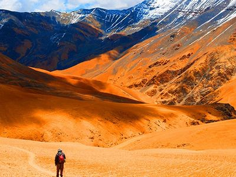

Following are some of the best trekking destinations in Nepal.
1. Everest Base Camp
 The Everest Base Camp trek on the south side is one of the most popular trekking routes in the Himalayas and is visited by thousands of trekkers each year.
Trekkers usually fly from Kathmandu to Lukla to save time and energy before beginning the morning trek to this base camp.
However, trekking to Lukla is possible. There are no roads from Kathmandu to Lukla and as a result, the only method of transporting large and heavy goods is by plane.
In 2015, it was noted that about 40,000 people per year take the trek from the Lukla airport to the Nepal Everest Base Camp.
Everest Base Trek Route Map from Nepal side.
From Lukla, climbers trek upward to the Sherpa capital of Namche Bazaar, 3,440 metres (11,290 ft), following the valley of the Dudh Kosi river.
It takes about two days to reach the village, which is a central hub of the area.
Typically at this point, climbers allow a day of rest for acclimatization. They then trek another two days to Dingboche, 4,260 metres (13,980 ft) before resting for another day for further acclimatization.
The Everest Base Camp trek on the south side is one of the most popular trekking routes in the Himalayas and is visited by thousands of trekkers each year.
Trekkers usually fly from Kathmandu to Lukla to save time and energy before beginning the morning trek to this base camp.
However, trekking to Lukla is possible. There are no roads from Kathmandu to Lukla and as a result, the only method of transporting large and heavy goods is by plane.
In 2015, it was noted that about 40,000 people per year take the trek from the Lukla airport to the Nepal Everest Base Camp.
Everest Base Trek Route Map from Nepal side.
From Lukla, climbers trek upward to the Sherpa capital of Namche Bazaar, 3,440 metres (11,290 ft), following the valley of the Dudh Kosi river.
It takes about two days to reach the village, which is a central hub of the area.
Typically at this point, climbers allow a day of rest for acclimatization. They then trek another two days to Dingboche, 4,260 metres (13,980 ft) before resting for another day for further acclimatization.
Another two days takes them to Everest Base Camp via Gorakshep, the flat field below Kala Patthar, 5,545 metres (18,192 ft) and Mt. Pumori.
Mount Everest has captivated intrepid men and women since the 1920s. The exploits of legends such as George Mallory, Sir Edmund Hillary and Tenzing Norgay put the mighty mountain on the map; thousands have followed, making huge sacrifices – many with their lives – in their own attempts to the summit..
But today, the trek to Everest Base Camp has become an achievable goal for people from all walks of life who want a glimpse of the world’s highest peak. In 2012, between 35,000 and 37,000 people trekked in the Everest region.
2. Annapurna Base Camp
Annapurna Base Camp Trek probably the best legendary and classical treks in the world offers breathe stopping Mountain View, give opportunity to experience the typical Nepali village, local people and their way of living traditional life in Himalaya of Nepal.
The Annapurna Base Camp route goes passing through spectacular and tranquil landscapes, charming Gurung and Magar villages, lush green Rhododendron, bamboo and alpine forests to the trip’s last and final destination, Annapurna Base Camp at the height of 4130m (13546ft.)
Finding yourself in the base giant Annapurna I (8091m) with 360 degree Mountain View is terrifically beautiful that is beyond your imagination that is an unforgettable lifetime mountain holiday experience in Nepal.
Regarding the difficulty of this trek, it is very moderate and doesn’t demand advanced physical fitness levels so anyone can enjoy and take pleasure in nature walking during this trek. Also, those who are traveling with children can also get pleasure from this trek. Trekking Annapurna Base Camp via Ghorepani allows your body to get adapted and acclimatized with high altitude. Also it helps you to keep your body in better shape and you can tackle physically depending aerobic walk in thin air area. Visitor having previous trekking experience with fit body can trek it in within short period of time. The highest elevation we will reach is 4130 meter from sea level.
Like most of the Annapurna treks except Annapurna Circuit, Annapurna Base Camp Trek also starts and ends in Pokhara - second biggest city and naturally blessed place to relax after the big hike in Annapurna. It is 200km to west from Kathmandu. All domestic airlines run several fligts daily from Kathmandu to Pokhara which cost USD 122.00 per person.
3. Upper Mustang

Upper Mustang Trek to hidden paradise of Mustang is fabulous tour that visitors experience ever best holiday trip in their life in Nepal. Upper Mustang; described as a mystique valley and the last forbidden kingdom in Nepal was just opened for foreigners in 1992. Trek to Mustang allows the travelers to witness heavenly beautiful Trans-Himalaya landscape, ancient Tibetan Buddhist shrines such as Stupas, Chhortens, Kaanis, Prayers walls, centuries old monasteries and interact with Tibetan like people makes the trip most lifetime memorable. Upper Mustang, also known as a ‘Mini Tibet of Nepal’ and a very well-liked trekking in Nepal, has been described as “Mountain Desert". The trekking tour to Lo Manthang- isolated region is a incredibly satisfying one for those who want to experience the hospitality and warmth of the locals living in this remote region.
Nepal Government Department of Immigration started to issue only a small number of special trekking permits since 1992. Before 1992 the region was banned to visit for foreign travelers. Upper Mustang is a perfect destination where generous scope is offered for visiting Buddhists Monasteries. This semi autonomous and heavily Tibetan influenced region was described by Tillman as fascinatingly ugly country, the more fascinating for being so little known" indeed, the trek to Lo Manthang is through an almost treeless barren landscape, a steep rocky trail up and down hill, mind-blowing panorama of Nilgiri, Annapurna, Dhaulagiri and several others peaks make your trek spectacular with lifetime experience. Trek begins from Jomsom - reachable by a scenic flight and accessible by walk from Ghorepani-Poon Hill-Tatopani-Jomsom and Kali Gandaki Valley trekking route.
Mustang is one of those few places in the planet that has survived a very close-niche life and that region was, until recently, was a forbidden land for outsides till 1992. This loneliness and isolation contributed the people of Mustang to conserve their life style and cultural heritage that remained almost unaffected for centuries. Hidden behind the high Himalaya ranges, Mustang is filled with handsome trekking zones. The high desert rain shadow of Himalayas receives very little rainfall making this region dry and parched, similar to the bordering Tibetan Plateau. The Lo Manthang, capital of Upper Mustang, lies in the remote Himalaya desert behind the Dhaulagiri and Annapurna mountain ranges, is an old traditional Tibetan Village, with rare medieval Buddhist arts and exotic culture. We, Wilderness Excursion offers perfect budget package trips to Mustang in most competitive trip cost and develop tailor made itinerary to meet your time frame for Nepal holiday.
4. Gokyo Lake
 Many of the mountain lovers are looking for excellent opportunity to view eyeful scene of the Mt. Everest famous as the Roof of the World and experience the culture of typical indigenous Sherpa community of Nepal in Himalayan Region. The Gokyo Lakes Trekking is one of the best offers of our well-organized and recently emerging trekking agency, Snowy Horizon Treks and Expedition.
The Gokyo lakes Trekking is the alternative and exception of the traditional Everest Base Camp Trekking that offers magnificent view of the mountain peaks and the Ngozumpa Glacier, the largest one in the Nepal Himalayas. From the route of this famous trail of Trekking in Nepal, you can experience the most popular mountains like Mt. Cho-Oyo (8201m), Mt. Everest (8848m), Mt. Lhotse (8501m), Mt. Makalu (8463m) etc. which are clearly visible in a panorama from Gokyo Ri (5483m) above Gokyo Lake.
This extraordinary trek is also worthy in a sense that it offers an ample opportunity to explore the amazing destination and its impressive sight, which is beyond human imagination. The most remarkable features of the Gokyo Lake Trek is, the view of tremendous ice ridge between Cho Oyu and Gyachung (7922m) located in Khumbu region. Gokyo valley is a magnificent place once a yak pasture situated near the Gokyo Lake with the view of Himalaya and you can encounter with its wild nature.
Many of the mountain lovers are looking for excellent opportunity to view eyeful scene of the Mt. Everest famous as the Roof of the World and experience the culture of typical indigenous Sherpa community of Nepal in Himalayan Region. The Gokyo Lakes Trekking is one of the best offers of our well-organized and recently emerging trekking agency, Snowy Horizon Treks and Expedition.
The Gokyo lakes Trekking is the alternative and exception of the traditional Everest Base Camp Trekking that offers magnificent view of the mountain peaks and the Ngozumpa Glacier, the largest one in the Nepal Himalayas. From the route of this famous trail of Trekking in Nepal, you can experience the most popular mountains like Mt. Cho-Oyo (8201m), Mt. Everest (8848m), Mt. Lhotse (8501m), Mt. Makalu (8463m) etc. which are clearly visible in a panorama from Gokyo Ri (5483m) above Gokyo Lake.
This extraordinary trek is also worthy in a sense that it offers an ample opportunity to explore the amazing destination and its impressive sight, which is beyond human imagination. The most remarkable features of the Gokyo Lake Trek is, the view of tremendous ice ridge between Cho Oyu and Gyachung (7922m) located in Khumbu region. Gokyo valley is a magnificent place once a yak pasture situated near the Gokyo Lake with the view of Himalaya and you can encounter with its wild nature.
Gokyo Lakes Trekking of Khumbu or Everest region is not only the sightseeing and expedition of Himalayan giants but also offers you to interact with the natives of Khumbu region known as Sherpa. Sherpas are famous for their unique culture and Nepalese mountain climbers. Only small lodge or teahouses are available within the entire route of this trek and less crowded than the Everest base camp trekking. Gokyo Lakes Trekking keeps your mind at peace, which makes the place worth to visit. The Gokyo Lake Trek starts from Lukla after 35 minutes scenic flight from Kathmandu, following the Dudh Koshi river valley towards Namche Bazaar and other main villages of Khumbu, Thame and Khumjung.
5. Ghorepani Poon hill
Poonhill trek starts from Nayapul after one and half hour drive from Pokhara.
This trek passes beautiful villages of Ulleri, Ghorepani and Ghandruk.
You will enjoy trek in the spectacular mountain scenery through delightful villages inhabited by Gurungs and Magars.
Around every corner is an exciting glance of the high mountains, whole horizons of which will be open to you as you reach the high points of your trek.
The view point on Poonhill (3210m.) offers the best view of mountains and sunrise. Dense rhododendron forests full of birds and imaging valleys make your trip more enjoyable.
Mt. Dhaulagiri ranges and Mt. Annapurna (I) as well as others higher mountains including Annapurna south, Annapurna II,III,IV, Gangapurna, Lamjung Himal, Barasikhar, Nilgiri, Tukuche Peak, Hiunchuli, and Manaslu ranges will view from this trek.
As the sun touches the snow-capped summits, the Himalayan giants, Dhaulagiri (8,167m) and Annapurna (8,091m) along with a maze of other peaks, slowly begin to appear, like magic, before our eyes. Anyone who loves nature and beautiful landscape will never forget this astounding experience. The trek can be lengthened and shortened according to the time you have.
Ghorepani Poon Hill Trekking, also popularly known as Annapurna Sunrise Trekking, or Annapurna Panorama Trekking, is one of the most popular and relatively easy treks that meander through the beautiful ethnic villages of Annapurna Region. Invigorating through some rhododendron forests, Poon Hill Trekking in Nepal will let you feel the Himalayan Panorama while providing you the opportunities to get close to the local Culture. However, Poon Hill Trek is obviously best known for the views from Poon Hill.